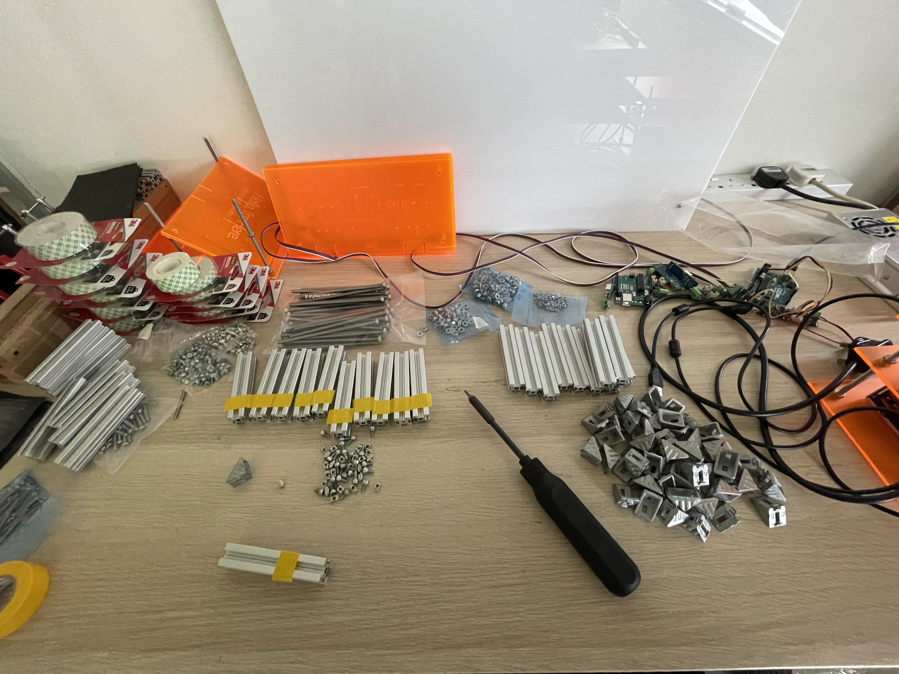
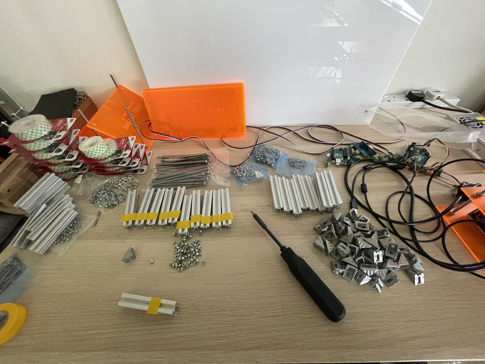

// Semester Two Week Thirteen: 04.04.22 - 08.04.22
Graduation Project:
// 04.04.22 - 08.04.22 - Exhibition Preparation.
// 04.04.22 - 08.04.22 - Exhibition Preparation.
Exhibition Prep week. This was such a stressful week, between getting the materials and having to find someone who drives a van to help me, to the amount of mounting tape I used. But it was a real experience preparing to set up and exhibition myself. So starting off I went ahead and laser cut a bunch of templates to mark out where the mounting and attachment holes were supposed to be. This is something that I picked up from Dhiya when interning with him. Laser cutting is a really useful tool to help with this, cause imagine having to measure out holes on a board that is 1.8m x 1.2m and then trying to do it accurately. The other templates I made were to mark out where the LED positions were and where to curve them.
Next phase of the set-up was to attach all the aluminium extrusions which served as spacers between the board and acrylic. And then attaching the LEDs, these weren't too different from working on the prototypes but at this scale they took way longer than expected and was very much more tiring and tedious, especially cutting 20 pieces of aluminium extrusions, I see why the shops dont want to do it now.
While mapping out the LEDs, ok so the specifications of the LED drivers say that it's only able to push out enough power for 5M of LEDs, but I required around 9M per strip, so at first I wanted to break them into 4.5m strips but i was afraid that it's too close to limit and there would be issues, but they worked perfectly fine. So I got curious, I tried a 9M strip, and well it worked. So remind me never to read the specifications, ok kidding but I went to check with a friend who does electrical engineering and he says these guides are usually for the safety and longevity of the components, they can actually handle much much more but I just got to keep an eye on it and make sure I don't burn the school down or something. But at 12V if anything happens usually it won't be anything more than just a blown driver that I have to replace. But this is really interesting to me and also something to take note of from now on when working with electronic components.
But in all honesty, Andreas might've had a point in scaling down, I can't imagine having done my initial idea by myself, that would have been insane, even at this scale it took so much work to get everything together. But no regrets I'm really loving how it's turning out and im optimistic (against my better judgement...maybe). But the whole process so far has made me realise how important it is to get a team together to work on things.

 


// End of this Section.
// End of the Week